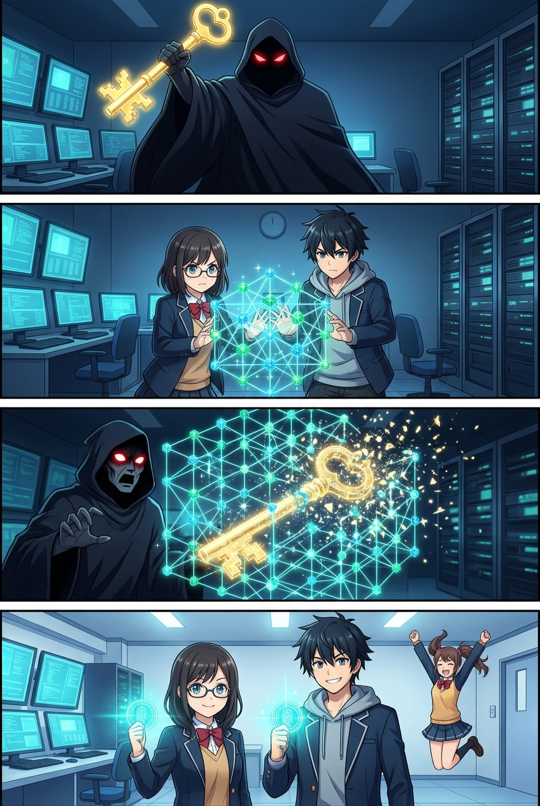
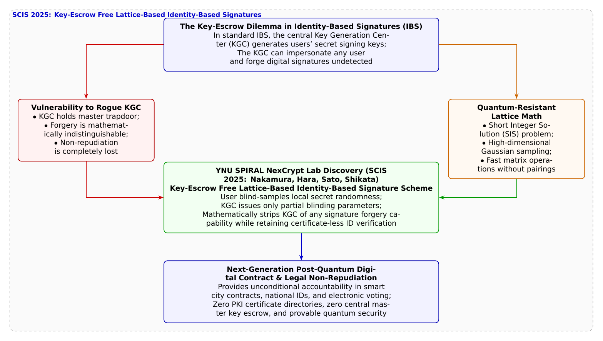

🎨 4コマ漫画挿絵（文字なし）
AI高解像度生成
▲ 【挿絵】青葉台高校 情報科学部＆帝都科学大学サイバーディフェンス・ラボでの実践シーン
💬 4コマ漫画キャラクターセリフ (Story Dialogue Script)
日・英バイリンガル (JA / EN)[悠真]「そうなんだ。それがIDベース暗号技術に長年つきまとってきた『キーエスクロー問題』だよ」
[Yuma] "Indeed. That's the notorious 'Key Escrow Dilemma' haunting identity-based schemes for decades."
[蓮]「鍵の生成にユーザー本人のランダムな秘密を混ぜれば、中央の管理者でも合鍵を作れなくなるはずだ！」
[Ren] "If users blend their own local randomness into key generation, not even the central master can forge it!"
[結衣]「証明書の管理コストをゼロに保ちながら、完全な法的否認防止（Non-repudiation）が量子耐性とともに成立します！」
[Yui] "Retaining zero PKI certificate overhead while guaranteeing absolute non-repudiation and quantum resilience!"
[蓮]「誰も不正ができない、真に公正なデジタル社会への大きな一歩だ！」
[Ren] "A giant stride toward a genuinely fair digital society immune to rogue authority!"
📖 小説本文
初冬の澄んだ空気が満ちる放課後、青葉台高校の情報科学部室。橘葵がタブレットに表示された電子契約サービスの規約画面をスクロールしながら、素朴な疑問を口にした。
「悠真先輩、この前習ったIDベース暗号って、暗号化だけじゃなくて『デジタル署名（電子サイン）』にも使えるんだよね？ メールアドレスを公開鍵にして、面倒な電子証明書の発行手続きなしに契約書にサインできる仕組み！」
「ああ、IDベース署名（IBS: Identity-Based Signature）だね」
城崎悠真がコーヒーカップを手に頷いた。
「でもね」葵は画面の一文を指差した。「鍵を発行してくれる『鍵発行局（KGC: Key Generation Center）』って、システム全体のマスター秘密鍵を持ってるんでしょ？ ということは、もしKGCのサーバーが乗っ取られたり、悪意ある管理者がいたら……私のメールアドレスを使って、私が知らないうちに数千万円の借金の契約書にサインを偽造されちゃうんじゃないの！？」
部室の空気が一瞬で引き締まった。
神崎蓮が膝を打った。「葵先輩、まさにそれです！ それこそが暗号の世界で最も恐れられてきた**『キーエスクロー問題（Key Escrow Dilemma）』**です！」
白石結衣がホワイトボードの前に歩み寄り、ペンを走らせた。
「デジタル署名において最も重要な法的要件は、後から『私が署名したのではない』と言い逃れさせない、そして他人に偽造させない**『否認防止性（Non-repudiation）』**です。しかし従来のIDベース署名では、KGCが原理的に全ユーザーの秘密署名鍵を計算できてしまうため、裁判になった際に『これは本人がサインしたのか、それともKGCが偽造したのか』を技術的に区別することが不可能だったのです」
「ええっ！？ 証明書が要らないのは便利だけど、裁判で『お前がサインしたんだろ』って濡れ衣を着せられるリスクがあるなんて怖すぎるよ……！」葵が目を丸くする。
「さらに問題なのは」と蓮が付け加えた。「RSAや楕円曲線に基づいた初期の対策技術も、近い将来やってくる巨大な量子コンピュータの前には無力化してしまうということです」
「その二重の難問を、美しいポスト量子格子理論で根本解決したのが、僕たちの所属する横浜国立大学SPIRALの**中村祐輝氏、原啓祐氏、佐藤慎悟准教授、四方順司教授（NexCrypt Lab長）ら**の研究なんだ」
悠真が誇らしげにタブレットを操作し、2025年1月の暗号と情報セキュリティシンポジウム（SCIS 2025）で発表された最新論文を映し出した。
「研究チームは、**『キーエスクロー問題に対応した格子に基づくIDベース署名』**を発表したんだ。耐量子暗号の主役である高次元格子上のShort Integer Solution（SIS）問題を数学的基盤に据えつつ、署名鍵の生成プロセスを巧みに分割（ブラインド化）したんだよ」
結衣が論文のプロトコル図を熱心に読み解き、歓声をあげた。
「……なんて見事なプロトコルでしょう！ ユーザー本人が手元で局所的な秘密ランダムベクトルを生成し、KGCはユーザーの秘密の全体像を知ることなく部分的な格子トラップドアパラメータだけを提供する。これにより、**KGCであってもユーザーの署名を偽造することが数学的に不可能**であることが厳密に証明されています！」
「KGCでも偽造できない……！？」葵が身を乗り出す。
「そうだ。相手のメールアドレスを指定するだけで一瞬で署名を検証できる『証明書レスの身軽さ』はそのままに、たとえ国家権力やクラウドのマスター管理者が裏切っても、絶対に他人のサインを捏造できない鉄壁の否認防止性を手に入れたんだ」
蓮が実験用のマイコン端末で、格子署名の生成と検証デモを走らせた。
画面に葵の部活IDが打ち込まれ、一瞬で電子サインが完了する。検証ログには「Valid Signature (Key-Escrow Free, Lattice-PQC Verified)」という誇らしい緑色の文字が刻まれた。
「これなら、誰にも秘密を握られることなく、自分の意志を世界に証明できるね！」
葵の顔に晴れやかな笑顔が咲いた。夕暮れの部室で、若きディフェンダーたちは、個人の自由と尊厳を支える暗号数学の崇高な使命を、胸の奥深くにしっかりと刻み込んでいた。
---
📊 セキュリティ構造図解 (TikZ LuaLaTeX生成)
国家安全基準・工学図解
▲ 【技術構造図】IPAデジタルスキル標準・国際規格に準拠した仕組みのモデル化